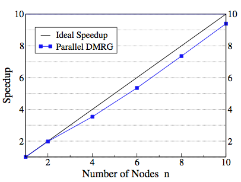
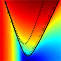

Latest News
New Discussion Forum
(Mar 25, 2016)
Along with the new release of ITensor, we have added a discussion forum to the website. This forum works similarly to Stack Exchange, where you can vote on questions and answers. Please create an account and post a question.
When writing a post, you can indent code text by 4 spaces to have it be automatically formatted (different font and highlighting).
You can also delimit latex by @@...latex...@@ for inline latex or by
$$
...latex...
$$
for latex on its own separate line.
ITensor Version 2.0 Released
(Mar 25, 2016)
The latest release of ITensor comes with a major overhaul of ITensor and IQTensor internals. Tensor storage is now handled by a set of independent storage types, which can have completely arbitrary layouts and behaviors. This paves the way for future support for even more sparse tensor types, in addition to the currently support ones such as diagonal tensors. For example, "combiners" are no longer a separate type, but are now just a special case of an ITensor or IQTensor with "combiner storage".
The new version also includes a new low-level linear algebra library as a foundation for ITensor. This library revolves around a simple tensor type with indices having a fixed order. Matrices and vectors are treated as special cases of tensors.
For more details on the update, see the changelog.
For help upgrading your code to the new version, see the transition guide.
ITensor at 2016 Sherbrooke Summer School
(Jan 11, 2016)
The International Summer School on Computational Quantum Materials will again be featuring lectures on using ITensor to implement matrix product state (e.g. DMRG) methods. Following lectures by U. Schollwoeck on MPS and DMRG, Miles Stoudenmire will present two lectures, 1.5 hours each, with hands-on demos of ITensor. Please register or notify your students about this opportunity to discuss details of ITensor with Miles in person and to attend a great summer school with many distinguished speakers. Deadline for registration is Feb 1, 2016.
ITensor Version 1.1—C++11 and more
(May 16, 2015)
Spring brings another new release of ITensor (Github link). Version 1.1.0 is the first to require C++11 compiler support, which allows us to make the library nicer to use and more memory safe. The internals have been reworked for better efficiency and stability.
This release also brings a major new feature: AutoMPO. The AutoMPO class makes it simple to create MPOs for many common Hamiltonians, including on two-dimensional lattices (see the front page for an example of usage). AutoMPO is also quite useful for creating other MPOs which are sums of local operators. For more details about this release, see the changelog.
ITensor Gets a Spring Clean
(May 27, 2014)
ITensor version 1.0 has just been released (Github link) with many improvements, such as automatic sparsity for ITensors and IQTensors; no more boost dependence when compiling with C++11; a more consistent interface for MPS methods; a new infinite DMRG code; new facilities for printing; and much more. For more details, take a look at the changelog.
Should you use periodic boundary conditions with DMRG?
(Apr. 28, 2014)
Are periodic boundary conditions the best way to eliminate edge effects? Aren't correlation function measurements the "standard" and best approach to detecting symmetry breaking? The answer may surprise you. Fully periodic boundary conditions impose a steep cost within DMRG, and one can make the case that they are needed only in rare circumstances. Open boundaries can even be a superior choice for other numerical methods such as quantum Monte Carlo. For more, see the full article.
Hands-On With ITensor at Sherbrooke Summer School
(Dec. 17, 2013)
The ITensor Library will be featured as part of the Sherbrooke International Summer School on Computational Methods for Quantum Materials taking place May 26 to June 6, 2014. Following Uli Schollwöck's tutorials on modern DMRG theory and practice, Miles Stoudenmire will give two talks on the practical implementation of DMRG and matrix product states using ITensor. This will include hands-on tutorials on getting started with ITensor and applying ITensor to real research problems.
Parallelizing DMRG Across Real Space
(Apr. 22, 2013)
Although DMRG is a one-dimensional method, its power and efficiency have made it surprisingly effective for studying two-dimensional lattice models. Recent DMRG results for the kagome lattice antiferromagnet have reinvigorated the search for realistic quantum spin liquids. DMRG was also the workhorse behind new sophisticated measurements of topological order. But two-dimensional DMRG calculations are computationally very demanding.
DMRG's success in 1d and 2d can be attributed to its ideal characteristics including robust convergence and exponential scaling of accuracy with computational cost. Yet one feature it lacked was parallelism, where a single DMRG calculation could be split across multiple computers.
Now this problem has been solved using insights based on matrix product states. Performing a matrix product state gauge transformation at the real-space boundary between two blocks provides an orthonormal basis for independent DMRG calculations within each block, then a way to merge the results afterward. Repeating this procedure across N blocks enables a single DMRG calculation to run almost N times faster. (See figure above.) Using the ITensor Library made it possible to rapidly develop and test the algorithm; all of the demanding benchmark calculations used ITensor as well.
Read the full paper here.
Note: although the method was developed explicitly using tensors and matrix product states, it should be straightforward to implement in conventional DMRG codes and only requires modifying the DMRG algorithm at block boundaries.
Studying Density Functional Theory in a 1D Laboratory
(Aug. 22, 2012)

At the heart of the enormously successful density functional theory (DFT) method lies a functional that gives the ground state energy of any system provided only its density. Can this exact energy functional be written down? What are its key properties?
Except for a handful of small systems, computing the exact functional in three dimensions is too difficult to permit a systematic study of its properties. However, a recent paper in Physical Review Letters shows that in one dimension—thanks to the power of density matrix renormalization group (DMRG) calculations and the flexibility of the ITensor Library—one can calculate the exact densities of a wide variety of continuum, long-range interacting systems consisting of long chains of artificial atoms.
From these exact densities, it is relatively straightforward to calculate the exact density functional and a host of other quantities of interest in DFT. In the future, this 1d laboratory should be useful for studying popular density-functional approximations and exploring improved functionals which could be applied to strongly correlated systems in 3d.
Read the paper here.
Majorana Fermions Thrive in the Hostile World of Electrons
(Sept. 19, 2011)
Recently, there has been a surge in proposals to observe exotic fractional particles known as Majorana fermions using rather conventional condensed matter systems. Producing and controlling these particles would be a key step toward building a robust quantum computer. In one of the simplest setups, Majorana fermions could be produced by applying a magnetic field to certain superconducting nanowires. But our present theoretical understanding leaves out many of the complications expected in a realistic nanowire experiment.
In a recent paper produced using extensive ITensor Library simulations, we take the important step of reintroducing the fact that electrons repel one another. The key issue is the extent to which the Majorana fermions survive these more realistic conditions. Although we find that electron interactions make them more fragile to thermal fluctuations, interactions ultimately result in a net gain since they make the Majoranas more robust to electron density fluctuations and allow them to appear at weaker magnetic fields - the latter two issues being more pressing experimentally. In fact, we go so far as to show that a magnetic field may not be necessary at all given the right combination of materials properties and strong interactions.
See the Physics synopsis.